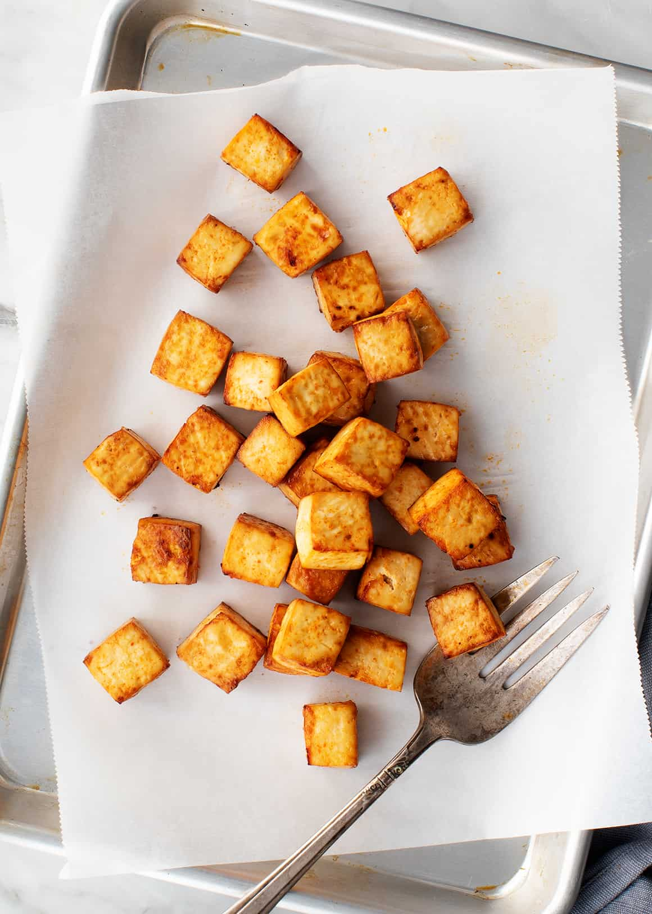

Tofu Tacos Recipe

Description:
No meat? No problem! This delicious tofu recipe will make
even the most carnivorous individual coming back for more.
Please follow the steps stated below.
Ingredients:
- 1 (16 ounce) package garden herb tofu, crumbled
- 2 tablespoons vegetable oil
- 1 clove garlic, minced
- ½ cup chopped onion
- 2 teaspoons chili powder
- etc...
Steps:
- Cook tofu, oil, garlic, and onion in a large skillet over medium heat for 5 minutes.
Add chili powder, paprika, cayenne, cumin, salt, lime juice, and tomato sauce to the skillet and stir. Cook for 3 minutes.
- Stir in cilantro. Spoon mixture into a bowl.
- etc...